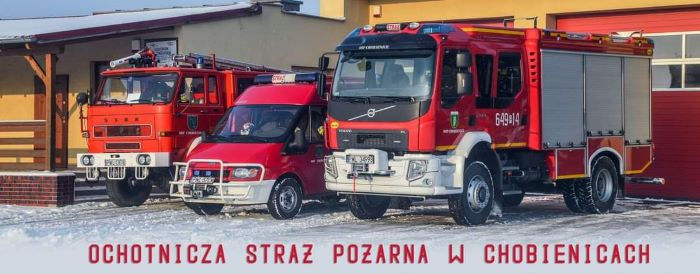

Historia:
W Chobienicach istnieje jednostka Ochotniczej Straży Pożarnej, która powstała w 1930 roku. Już w okresie międzywojennym wybudowano tu remizę, która służyła strażakom do końca lat 80. XX wieku. Obecnie jednostka ma do dyspozycji większą remizę – po byłej zlewni mleka. W ostatnich latach budynek został znacznie rozbudowany – znajdują się w niej nie tylko garaż ale również salka z zapleczem kuchennym. Jednostka liczy 58 członków.

Członkowie Straży Pożarnej dysponują wozami: GBA 3/16/4 VOLVO FL oraz FORD TRANSIT SLRt
